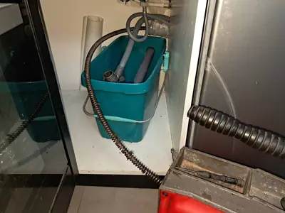
Udrażnianie rur
Usuwanie zatorów w kuchniach, łazienkach, odpływach liniowych i podejściach kanalizacyjnych.
Łódź i okolice, pilne zgłoszenia przez całą dobę
Odbieram telefon osobiście i sam wykonuję pracę, bez pośredników. Zatory, zapchane WC i zlewy, przecieki, spłuczki podtynkowe i zawory.
Dojazd zwykle 30-60 min, cena przed pracą
4,9/5 - 305 opinii w Googlestan na 23.10.2026
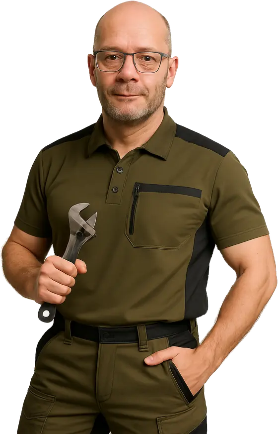
Udrażnianie kanalizacji i codzienne awarie w mieszkaniach, domach, lokalach usługowych i placówkach. Spirale elektryczne, kamera inspekcyjna, metody mechaniczne i ciśnieniowe.

Usuwanie zatorów w kuchniach, łazienkach, odpływach liniowych i podejściach kanalizacyjnych.
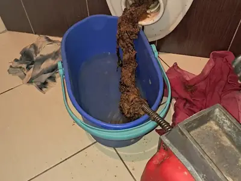
Udrażnianie toalety i podejść kanalizacyjnych, także gdy cofka wraca do muszli lub brodzika.
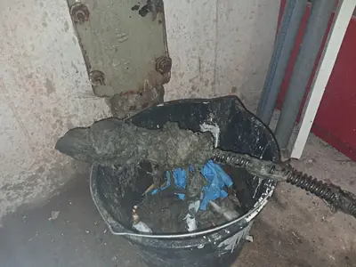
Szybka pomoc przy nagłych awariach wodno-kanalizacyjnych, także wieczorem, w nocy i w święta.
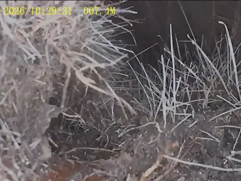
Diagnoza nawracających problemów: przeszkody, osady, uszkodzenia i błędy w instalacji.
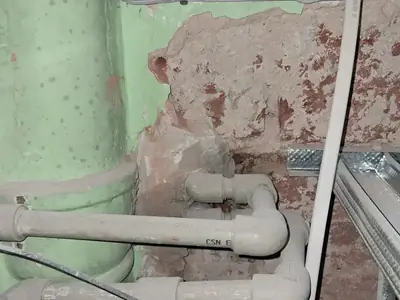
Wycieki z rur, zaworów, wężyków, baterii, syfonów, spłuczek i podejść wodnych.
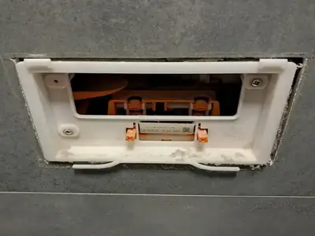
Serwis mechanizmów spłukujących, zaworów napełniających i nieszczelności.
Nie musisz wiedzieć, czy to syfon, podejście, pion czy spłuczka. Wystarczy opisać objawy: gdzie stoi woda, skąd cieknie, czy jest cofka i od kiedy problem wraca.
Rzeczywiste awarie z Łodzi i okolic: objawy, stan instalacji, użyty sprzęt i efekt pracy. Lokalizacja podana w zakresie bezpiecznym dla klienta.
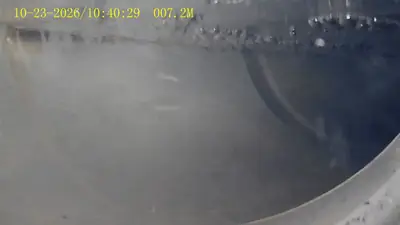
Na odcinku wspólnym dla kilku lokali kamera wykazała trzy przeciwspadki, wystającą uszczelkę i liczne zmiany materiału PVC-żeliwo.
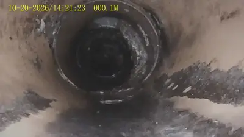
Po udrożnieniu kamera pokazała kamień i odspojone płaty osadu, a kontrola instalacji osobny zator kuchenny z tłuszczu.
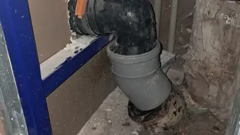
Kamera pozwoliła namierzyć nieszczelny zgrzew PP, a kontrola ujawniła kolejne błędy schowane za zabudową.
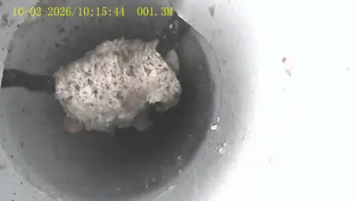
Inspekcja z dachu wykazała błąd montażowy: naprężona uszczelka przechodziła przez światło pionu.
We wpisie nagranie z inspekcji4,9/5 z 305 opinii w Google, stan na 23.10.2026. Poniżej najnowsze opinie, cytowane 1:1.
Sympatyczny Pan Michał przyjechał na umówiona godzine. Natychmiast zabrał się do ustalenia przyczyny awarii. Po fachowej ocenie przystąpił do usunięcia zatorow instalacji, co nie było takie łatwe, ponieważ rury nie były czyszczone kilkanaście lat. Pań Michał beż problemu usunął fachowo awarie, i doradził co należy robić aby zaistniałą awaria nie powtarzała się ponownie. Z całego serca polacam Pana Michala Jest On Wspaniałym Fachowcem. Wiktor Zdzienicki
Serdecznie polecam! Hydraulik przyjechał w niecałe pół godziny od zgłoszenia i błyskawicznie zajął się naprawą syfonu. Usługa została wykonana sprawnie i profesjonalnie. Fachowiec był punktualny, uprzejmy i dokładnie wyjaśnił, co zostało naprawione. Świetny kontakt, błyskawiczna reakcja i pełen profesjonalizm. Jeśli ktoś szuka solidnego hydraulika w Łodzi (Śródmieście), zdecydowanie polecam! Panie Michale jeszcze raz bardzo dziękuję! ☺️
Gorąco polecam! Fachowiec przyjechał w sobotę o godzinie 20:00, co uratowało nas z opresji. Błyskawicznie udrożnił rury kanalizacyjne. Praca wykonana w 100% profesjonalnie, czysto i sprawnie. Pełen profesjonalizm!
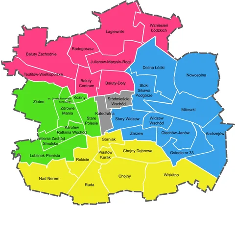
Mieszkania, domy, lokale usługowe i placówki. To jedna firma, bez fikcyjnych oddziałów - usługę wykonuję osobiście z dojazdem do klienta.
Zobacz też mapę awarii Łódź i co najczęściej psuje się w poszczególnych dzielnicach.
Nie stosuję sztucznego cennika z gwiazdkami i drobnym drukiem. Koszt zależy od rodzaju problemu, dostępu do instalacji, długości odcinka i zakresu prac. Cenę podaję przed rozpoczęciem pracy i nie zaczynam dodatkowego zakresu bez uzgodnienia.
Płatność po wykonaniu usługi: karta, BLIK, przelew lub gotówka. Wystawiam rachunki, a dla firm i instytucji także faktury.
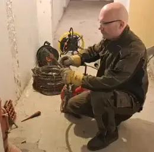
Jednoosobowa firma. Odbieram telefon osobiście i sam wykonuję pracę od początku do końca. Mam ponad 20 lat praktyki w hydraulice i kierunkowe wykształcenie techniczne. Specjalizuję się w udrażnianiu kanalizacji, także w starych żeliwnych pionach łódzkich bloków i kamienic.
Przy pilnych zgłoszeniach staram się dojechać możliwie szybko, ale rzeczywisty czas zależy od aktualnie wykonywanej pracy, dzielnicy, pory dnia i sytuacji na drogach. Gdy jestem zajęty przy innej awarii, mówię o tym wprost i podaję realny termin. W wielu przypadkach usługę można wykonać jeszcze tego samego dnia.
Cena zależy od rodzaju usterki, dostępu do instalacji, średnicy i materiału rur, długości odcinka oraz tego, czy potrzebny jest demontaż lub kamera. Podczas rozmowy podaję orientacyjną wycenę, a ostateczną cenę ustalam przed rozpoczęciem pracy.
Tak, przyjmuję pilne zgłoszenia wieczorami, w nocy, w weekendy i święta, gdy wycieka woda, wybija kanalizacja albo awaria grozi zalaniem. Jeżeli problem można bezpiecznie zabezpieczyć do rana, powiem, co zrobić, i ustalimy rozsądny termin zamiast niepotrzebnego kosztu nocnego wyjazdu.
Zakręć zawór przy uszkodzonym urządzeniu, a jeżeli to nie pomaga, główny zawór w mieszkaniu lub domu. Podstaw naczynie i zabezpiecz podłogę. Nie rozkręcaj połączenia pod ciśnieniem i nie dokręcaj zaworu na siłę, bo stary element może pęknąć całkowicie.
Najczęściej nie. Granulat lub silny preparat może zbić się z osadem w twardy korek i stworzyć zagrożenie przy demontażu syfonu albo pracy spiralą. Jeżeli środek został już użyty, koniecznie powiedz o tym przed rozpoczęciem pracy.
Wybija kanalizacja, toaleta się zatyka, cieknie zawór albo wraca problem ze spłuczką? Im szybciej usłyszę, co się dzieje, tym szybciej dobiorę właściwe rozwiązanie.